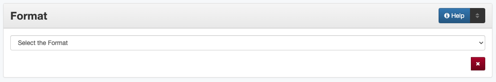

Format
Definition
The digital manifestation of the resource
Where Can the Format Information be Found?
Format is determined by examining the item
How Format Works in the Metadata Form
- Parts:
Format – drop-down menu
- Repeatable?
No
- Required?
Yes - also see (more information) about required field
How Should the Format be Filled in?
Select the correct format from the controlled vocabulary
Guideline |
Examples |
|---|---|
The format should match the broad resource type for the item: |
|
|
text - Text |
|
image - Image |
|
image - Image |
|
other - Other |
Other Examples:
- Yearbook
Format: text - Text
- Architectural drawing
Format: image - Image
- Transferware plate
Format: image - Image
- Musical recording
Format: audio - Audio
- U.S. Department of Agriculture bulletin
Format: text - Text
- Postcard
Format: image - Image
Resources
UNT Format Controlled Vocabulary
More Guidelines:
Comments
For physical (as opposed to digital) nature, including size and duration of the original resource, use the Physical Description element.
For categorizing the primary content of the resource (to aid in searching) use the Resource Type element.
Format is important because choice of appropriate preservation strategies depends on knowing the structural type of the digital manifestation
Glossary of Formats
Format
Code
Use for:
Audio
audio
Sound files
Image
image
Two-dimensional, graphic representations
Text
text
Written or printed documents
Video
video
Moving images
Website
website
Collection of webpages
Other
other
An other items